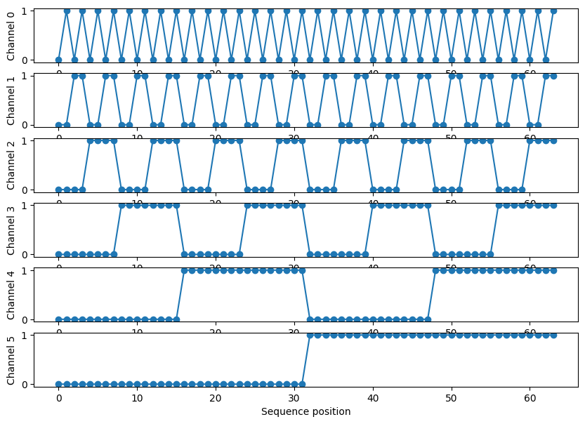
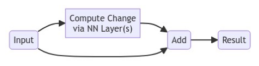

— DRAFT MODE: Work in progress. —
1 Preface
This is a follow-up to an earlier lesson, “To Understand Transformers, Focus on Attention”. In this lesson, we’ll fill the “blanks” we left in the Transformer architecture last time, and go on to build a working example.
For that example, let’s do something different from the many other online lessons about working with text & Natural Language Processing (NLP): Let’s make a “Generative Music Transformer.” To keep things “small,” we’ll work in terms of MIDI instead of raw audio. For ideas about trying raw audio, see “Further Study” in Section 10.
Note
The goal of this exercise is building some understanding, not building a killer MIDI-generating app. If you want the latter, check out Google Magenta’s paper from 2018, or various extensions since then. If you just want to play around with a great MIDI model, check out SkyTNT’s HuggingFace Space. By “some” understanding, I also mean that we’re going to largely ignore the many, many variants and improvements on Transformers made over the past several years. I find that Sebastian Raschka’s posts to be helpful for considering major updates on the Transformer “theme”.
1.1 Managing Expectations
What we’ll end up with is something akin to producing garbled Shakespeare, except it’s going to be musical. Garbled music seems much harder to tolerate than garbled Shakespeare, which is why I have delayed releasing this lesson for multiple months – I’ve kept trying to get better results. At this point, I’m resigned to the fact that this is a hard problem (even for MIDI!), and my current outputs are about “as good as they’re going to get”:
It's way harder to train a simple MIDI transformer to sound OK than a next-character GPT-type transformer to create text that makes at least basic sense. MIDI tokenizer choice is a big deal here also.
— Mateusz Modrzejewski (mamodrzejewski?) November 26, 2023
…and we’re going to keep the tokenizer simple.
In the following, I’ve often put sections and subsections in expandable “Details” blocks, to make it easier to naviate. Enjoy.
– Scott H. Hawley, December 2023
2 Intuiting the Rest of the Transformer
The previous lesson left some things out. In this section, we’ll build some intuitive understanding of these other components, and a bit of code.
Below is a picture of the original Transformer model diagram, whose parts we will elucide as we go on. It’s set up like the traditional “encoder-decoder” architecture one often sees in the form of an “hourglass shape”, although it may not be obvious from the Transformer diagram:
{kind=link}

We’re going to go through the various components that make up the above diagram. But first, let’s point out something about the Attention mechanism that we skipped over in the previous less, namely the computational “cost” associated with making every part of a sequence with every other part.
2.1 The Cost of Attention
The attention mechanism per se that we covered in the previous post has a serious drawback: the computational cost scales like the sequence length squared, i.e. for a sequence length of \(N\), the cost is 𝒪(\(N^2)\). This is one reason that Large Language Models can be “Large” – trying to model long sequences results in big matrices!
Details
Various schemes have been proposed to reduce this cost, such as only applying attention over nearby tokens (so-called “sliding window” attention) or other methods that fall under the general heading of “matrix sparsification”. Here’s a slide from a talk I gave a few years ago, illustrating a few of these schemes:

Linear layers with convolution operations, such as with the local receptive fields shown in b) and c). (Source: S.H. Hawley, “Learning Tunable Audio Effects via Neural Networks with Self-Attention”, AES Virtual Symposium: Applications of Machine Learning in Audio, Sep 28, 2020.)TODO: crop that image
For this lesson, we’ll see how far we can get with the basic \(N^2\) attention. Beyond that, I encourage you to check the literature for whatever the latest/hottest cost-reducing model might be. Popular candidates include FlashAttention and PercieverIO. Even sliding windows are still in use in ways that some people find significant.
2.2 Positional Encoding (aka Positional Embeddings)
MLPs and/or ConvNets don’t come with (much of) a sense of position, but giving them one can improve performance on tasks where ordering and position matters. There many ways people have have endowed such models with position-awareness and… TBH there’s not really a “silver bullet” solution, so a variety of approaches end up performing about the same. In what follows we’ll mention a few options.
Details
TODO: I want to redo this whole thing.
Various models will encode position by either adding numbers to our input encodings(/embeddings), or by concatenating additional channels.
For example the official Transformer model used with NLP employes sines & cosines (i.e., Fourier series) for the PEs and adds them to the text embeddings. The frequencies of the functions the original used underwent some tweaking (as in the “10000”s in the equations below):
\[ PE_{(pos,2i)} = \sin(pos / 10000^{2i/d_{model}}) \\ PE_{(pos,2i+1)} = \cos(pos / 10000^{2i/d_{model}}) \]
…but we’re not going to use those. (Because I’ve decided we’re not gonna do NLP!)
In fact, even the authors of the Transformer paper said they tried a few different PE methods/equations (including letting the model learn the PEs) but found no significant impact on performance between them.
So instead of the original sines & cosines,, we’ll use a simplified scheme that Francois Fleuret used in the code for his “AttentionToy1D” demo. It essentially makes a “binary oscillation” scheme of ever-increasing “wavelength”. (Or, if you like to think geometrically, it labels each position as being a vertex of a hypercube.)
See the picture that follows this code for get_positional_input():
Show the code
import math, torch
from matplotlib import pyplot as plt
import numpy as np
def get_positional_input(seq_length, channel_index=0):
"""scheme taken from Francois Flueret's attentiontoy1.py,
cf. https://twitter.com/francoisfleuret/status/1263516788479922176"""
c = math.ceil(math.log(seq_length) / math.log(2.0))
positional_input = ((torch.arange(seq_length).unsqueeze(0) // 2**torch.arange(c).unsqueeze(1))%2).float()
#positional_input = positional_input[:, 0:this_seq_length] # clip it
#print("this_seq_length, positional_input.shape =",this_seq_length, positional_input.shape)
if channel_index==1: positional_input = positional_input.unsqueeze(0)
return positional_input
test_seq_length = 64
pe = get_positional_input(test_seq_length)
# Plot what these PE channels look like:
fig, ax = plt.subplots(nrows=pe.shape[0], figsize=(10,7))
for c in range(pe.shape[0]):
ax[c].plot(pe[c,:],'o-')
ax[c].set_ylabel(f"Channel {c}")
ax[c].set_xlabel(f"Sequence position")
plt.plot()
print(f"{pe.shape[0]} PE channels for test_seq_length = {test_seq_length}. (Check: log_2({test_seq_length}) = {math.log2(test_seq_length)}).")6 PE channels for test_seq_length = 64. (Check: log_2(64) = 6.0).
…So for each sequence position (horizontally), there is a unique list of 1’s and 0’s across the PE channels (vertically). These lists will be our Positional Encodings.
2.2.1 PE: To Add or Concatenate?
Here’s a design question: Should we add these PEs to our inputs or concatenate them? That’s debateable, and it depends. Here’s a great video discussing this topic. If the number of PE channels is less than the number of input channels (or input embedding dimensions), then we’ll definitely need to concatenate the PEs as additional channels for the inputs. That’s what Fleuret did when he was working with only one channel of floating point inputs, BTW. Here’s some code we’ll use later to concatenate the PEs to our data sequences:
def concat_positional_encoding(input, channel_index=0):
"concatenates additional PE channels onto to input"
positional_input = get_positional_input(input.shape[-1], channel_index=channel_index)
return torch.cat( (input, positional_input), dim=channel_index)2.2.2 PE: Where’s the “Start”?
Another design decision: Should we encode each token’s position relative to the start of the entire document/song, or only the token’s position relative to the start of the batch (or sequence-window) we’re computing?
The former (full-document PEs) would allow the model to learn some sense of what sorts of things happen near the beginning, middle & end of a piece (e.g., intro, chorus, outro), but perhaps at the cost of better learning local phenomena. Plus we’d need more channels of PEs to cover such lengths, which would imply more dimensions to our embeddings.
(Also note that if we try to concatenate many articles/songs together, then…should we re-start the PE values at each “boundary” between pieces?)
The latter (PEs only within each batch-sequence) would be simple to do, but it seems unlikely that the model will learn much about the “structure” of the works we want to model. > My usual mantra in ML is “Try both and see! (But do the simplest thing first.)”
So we’ll set it up with position-within-batch at first. And maybe change it later.
2.3 Residual Connections
In the Transfomer model diagram of Figure 1, wherever you see arrows going around something and connecting to a yellow “Add & Norm” block, that is indicative of a “skip residual” or just “residual” connection. Readers will likely seen residual / skip connections in other contexts, so we’ll make this section “Details”-expandable for those who haven’t encountered them.
Details
This is a pretty simple idea that yields payoffs in many areas of numerical modeling: You model the change in something instead of modeling the whole thing.
Show the code that made the flowchart
# making a lil flowchart diagram with mermaid
import base64
import requests, io
from PIL import Image
import matplotlib.pyplot as plt
graph = """
flowchart LR
A(Input) -->B["Compute Change<br>via NN Layer(s)"]
B --> C(Add)
A --> C
C --> D(Result)
"""
graphbytes = graph.encode("ascii")
base64_bytes = base64.b64encode(graphbytes)
base64_string = base64_bytes.decode("ascii")
img = Image.open(io.BytesIO(requests.get('https://mermaid.ink/img/' + base64_string).content))
plt.xticks([])
plt.yticks([])
plt.axis('off')
plt.imshow(img)
plt.show()
With neural networks, this residual scheme has the added benefit of allowing for efficient backpropagation. There are claims that “skip residual” connections also help smooth the loss surface, such as this figure in a N(eur)IPS paper from 2017:

2.4 Multi-Head Attention
As described in the previous lesson, Multi-Head Attention simply involves allowing differently-weighted attention operators (called “heads”) to perform attention operations, allowing them to focus on different “senses” of phrases, parts of speech, or in our case, musical structures.

2.5 Layer Normalization
This alternative to Batch Normalization (in which we perform elementwise operations where we subtract the mean across the batch dimension and divide by the variance). Instead of doing this across the batch dimension, we do it across the feature dimension(s).

One big advantage of doing our normalization across layers instead of batches is that it allows for small batch sizes. Language models are often large, so they take up a lot of memory, which means you might need very small batches. But small batches will not allow you to do very good batch normalization. So, LayerNorm helps us get good statistics for the mean and variance that we use to normalize.
2.6 Stacking Blocks: Embeddings of Embeddings…of Embeddings
By stacking layers of our transformers, i.e. feeding embeddings into layers that will render them as new embeddings, we wil increase the representational power of our model. In terms of code, this is easy to do by looping over a list of layers.
3 The Music (MIDI) Dataset
This section adopts a first-person perspective because I want to convey a personal tone: I confess that I’m “not a MIDI guy,” having always worked with raw audio exclusively. I vastly underestimated how difficult it would be to get decent results. Starting from Google’s well-known MAESTRO dataset of solo piano performances – NOTE: virtuoso piano performances! –I kept downgrading the “difficulty” of the dataset until settling on Bach chorales.
3.1 Learning About MIDI Data
Details
The MAESTRO data wasn’t overly challenging if I only focussed on modeling the pitches, but music is pitch + timing (+ more). What’s more, I’d only ever seen MIDI music “quantized” into a grid-based “piano roll” format with a known time-signature, not realizing that that’s not what MIDI data really is. For our purposes, it’s worth noting that MIDI encodes several pieces of information on a per-note basis:
- What instrument played the note
- What pitch was played – an integer between 0 and 127.
- The start time of the note – in units of the “MIDI clock” which usually ticks at 50,000 times a second. This is typically rendered as a floating-point number when using Python MIDI-processing packages such as Colin Raffel’s pretty-midi (which we will use)
- The end time of the note - another float.
- The “velocity” of the note – e.g. how hard a piano key was struck.
So, no time signature, no quarter-note, half-note, etc. But fine, taking a lead from the Google Tensorflow Demo for RNN Modeling, we can reduce each note to 3 numbers: 1. pitch 2. “step” in time since the previous note 3. duration of the note (i.e. end time minus start time).
…and focus on single-instrument work, and disregard the velocity.
EVEN THAT was too hard for the code below do with MAESTRO. I then noticed a paper by the Google team pointed out that quantizing the time into bins of 8 milliseconds was an ok simplification to make, but even this proved too hard for my model. (I could do 16 ms, but that sounded weird.)
…so…. after surveying other things, I went with Bach Chorales, which actually are presented in piano-roll format quantized to 16th note time intervals. Then I had to convert those from JSON to true MIDI, because by then the rest of my code expected MIDI.
I’ll spare you the details of that process, but note that the data link below is not the official dataset link, it’s my private stash where I converted the JSON to .mid.
3.2 Install Things
Show the code for system-wide installs
import platform
import os
def install_package(package_name):
"For installing system binaries on Linux (Ubuntu/Debia) or Mac (via Homebrew)"
if platform.system() == 'Darwin':
os.system(f'brew install {package_name}')
elif platform.system() == 'Linux':
import getpass
password = getpass.getpass()
command = f"sudo -S apt-get install {package_name}"
os.popen(command, 'w').write(password+'\n')
else:
print("Unsupported Operating System")
install_package('fluidsynth')Show the code for pip installs
!pip install -qq gdown pyfluidsynth pretty_midi torch numpy pandas midi-player multiprocessShow the code for imports
# import (most of) what we'll need for the entire lesson
import collections
import datetime
import fluidsynth
import glob
import pandas as pd
import pretty_midi
import torch
from torch import nn, einsum
from torch.nn import functional as F
from torch.utils.data import Dataset, DataLoader
from typing import Optional
from glob import glob
from pathlib import Path
import multiprocess as mp # multiprocess is a Jupyter-compatible fork of multiprocessing
from functools import partial
from tqdm import tqdm # note: Quarto blog won't print output from tqdm.notebook
#from tqdm.contrib.concurrent import process_map # process_map throws errors on Mac :'-(
import random
import numpy as np
import pprint3.3 Download and Inspect the Data
Show the code for downloading the dataset
# Get the data
data_source = 'jsb_chorales_midi'
# TODO: add options for MAESTRO, others
data_dir = Path('midi_data') # generic name for whatever midi we might want
REST_PITCH = 127 # special code used to denote rests
!gdown -O {data_source}.tgz 1MdJiNEgtkvCx9tnyQWcnEE5GPMY6ADUb
!tar zxf {data_source}.tgz; rm -rf midi_data; ln -s {data_source} midi_data ;
# get the list of MIDI filenames
filenames = sorted(glob(str(data_dir/'**/*.mid*'),recursive=True))
print('Number of files:', len(filenames))Downloading...
From: https://drive.google.com/uc?id=1MdJiNEgtkvCx9tnyQWcnEE5GPMY6ADUb
To: /Users/shawley/github/blog/posts/jsb_chorales_midi.tgz
100%|████████████████████████████████████████| 137k/137k [00:00<00:00, 4.29MB/s]
Number of files: 382Let’s inspect one of the files – using the MIDIPlayer object created especially for this lesson!
Show the code for MIDI player usage
from midi_player import MIDIPlayer
from midi_player.stylers import dark # I like dark mode
midi_file = filenames[0]
MIDIPlayer(midi_file, 360, styler=dark, title=f"midi_file = {midi_file}")And let’s load a single file and convert it to a PyTorch tensor called notes_tensor, and we’ll go ahead and convert “start” and “end” times “step” and “duration” times.
Show the code
def midi_file_to_tensor(filenames, i=None, keep_start_end=False): # filenames could just be a single filename
midi_file = filenames if i is None or type(filenames)==str else filenames[i]
"reads a single midi file and converts it to tensor with elements (pitch, step, duration)"
pm = pretty_midi.PrettyMIDI(midi_file) # read in the whole file. this can be very slow for long MIDI files (e.g. in MAESTRO)
# Sort the notes first by start time (and then by pitch if two notes start at the same time)
sorted_notes = sorted(pm.instruments[0].notes, key=lambda note: (note.start, note.pitch))
notes = torch.empty( (len(sorted_notes), 3 + 2*keep_start_end), dtype=torch.float32 ) # allocate storage
prev_start = sorted_notes[0].start
for i, note in enumerate(sorted_notes):
notes[i] = note.pitch
notes[i, 1] = note.start - prev_start # step, i.e. time since start of previous note
notes[i, 2] = note.end - note.start # duration
prev_start = note.start
if keep_start_end: # might find it useful be able to keep these for easier analysis later
notes[i, 3] = note.start
notes[i, 4] = note.end
return notes
notes_tensor = midi_file_to_tensor(midi_file)
pd.set_option('display.notebook_repr_html', True)
notes_df = pd.DataFrame(notes_tensor, columns=['pitch','step','duration']) # actually df's look nicer
print("First 8 notes of notes_tensor:")
notes_df[:8]First 8 notes of notes_tensor:| pitch | step | duration | |
|---|---|---|---|
| 0 | 53.0 | 0.000000 | 0.479545 |
| 1 | 57.0 | 0.000000 | 0.479545 |
| 2 | 60.0 | 0.000000 | 1.440909 |
| 3 | 65.0 | 0.000000 | 0.479545 |
| 4 | 52.0 | 0.479545 | 0.479545 |
| 5 | 55.0 | 0.000000 | 0.479545 |
| 6 | 72.0 | 0.000000 | 0.240909 |
| 7 | 70.0 | 0.240909 | 0.238636 |
We’ll convert those floating point numbers to integers via the “tokenizer” below.
Now we’ll load each song into an entry in a list called notes_tensor_list:
Show the code
def files_to_tensor_list(filenames, keep_start_end=False):
"Reads MIDI files in parallel so should be reasonably fast. JSB Chorales are no prob but for MAESTRO you want this"
# tensor_list = process_map(midi_file_to_tensor, filenames, max_workers=mp.cpu_count(), chunksize=1) # Doesn't work on Mac
tensor_list = []
with mp.Pool(processes=mp.cpu_count()) as p:
max_ = len(filenames)
with tqdm(total=max_) as pbar:
for r in p.imap_unordered(partial(midi_file_to_tensor, filenames, keep_start_end=keep_start_end), range(0, max_)):
tensor_list.append(r)
pbar.update()
return tensor_list
notes_tensor_list_filename = f'{data_source}_tensor_list.pt' # we'll save the result to a file for easier re-reading next time
read_all_midi_files = not os.path.exists(notes_tensor_list_filename) # check to see if it already exists
if read_all_midi_files:
notes_tensor_list = files_to_tensor_list(filenames)
torch.save(notes_tensor_list, notes_tensor_list_filename) # save for next time
else:
notes_tensor_list = torch.load(notes_tensor_list_filename) # just read from the last time we made one
print(f"\nlen(notes_tensor_list) = {len(notes_tensor_list)}")
len(notes_tensor_list) = 382Also, let’s make a single tensor all_notes out of all the notes. We’re only going to use this for analysis purposes; for everything else we’ll use the notes_tensor_list, which…I’m now going to abbreviate as notes_tl
notes_tl = notes_tensor_list
all_notes = torch.vstack(notes_tl).type(torch.float32)
print("all_notes.shape = ",all_notes.shape)all_notes.shape = torch.Size([78418, 3])3.4 Making a Tokenizer
Rather than try something sophisticated like calling MidiTok, we’re going to treat this like a “char-level RNN” and just regard each note as a “parallel” group of 3 tokens (one token for pitch, step, and duration). This means that we will need 3 “codebooks” that can encode & decode between true values and their tokens.Details
For the pitch values, it’s pretty easy since there are up to 128 pitches. Probably they won’t all be used, so we could limit the range of pitches, however, I’m going to want to do some pitch-bending data augmentation, so the pitch tokens will just be int versions of their floats, indices in a 128-dimensional space.
For the timing – which I don’t plan to do any augmentation of – we’ll just write down what unique values are present. These will form the “vocabularies” that we often see used in NLP settings.
Oh, also: The timing values end up being reaaalllly long in some cases. Like, notes with 15 seconds in duration? I’m going to go ahead an clamp those to a maximum value of 4 seconds.
Show the code
from collections import defaultdict
def make_codebooks(all_notes, verbose=True):
codebooks = []
n_codebooks = all_notes.shape[-1] # should be 3
for i in range(n_codebooks):
if i==0: # i=0 means pitch
cb_vals = torch.arange(128) # just use all possible pitches
else: # i!=0 means timing
cb_vals = all_notes[:,i].unique().sort()[0]
if verbose: print(f"\n---\ncb {i}: cb_vals = {cb_vals}")
codebooks.append({'encode':{k.item(): int(v) for v, k in enumerate(cb_vals)}, # codebooks go both ways
'decode':{int(v): k for v, k in enumerate(cb_vals)}})
if verbose: print(f" cb {i}: cb keys = {codebooks[-1]['encode'].keys()}")
return codebooks
all_notes[:,1:] = torch.clamp(all_notes[:,1:], 0, 4.0) # clamp max value of step & dur
codebooks = make_codebooks(all_notes)
vocab_sizes = [len(cb['encode']) for cb in codebooks]
print("vocab_sizes = ",vocab_sizes)
---
cb 0: cb_vals = tensor([ 0, 1, 2, 3, 4, 5, 6, 7, 8, 9, 10, 11, 12, 13,
14, 15, 16, 17, 18, 19, 20, 21, 22, 23, 24, 25, 26, 27,
28, 29, 30, 31, 32, 33, 34, 35, 36, 37, 38, 39, 40, 41,
42, 43, 44, 45, 46, 47, 48, 49, 50, 51, 52, 53, 54, 55,
56, 57, 58, 59, 60, 61, 62, 63, 64, 65, 66, 67, 68, 69,
70, 71, 72, 73, 74, 75, 76, 77, 78, 79, 80, 81, 82, 83,
84, 85, 86, 87, 88, 89, 90, 91, 92, 93, 94, 95, 96, 97,
98, 99, 100, 101, 102, 103, 104, 105, 106, 107, 108, 109, 110, 111,
112, 113, 114, 115, 116, 117, 118, 119, 120, 121, 122, 123, 124, 125,
126, 127])
cb 0: cb keys = dict_keys([0, 1, 2, 3, 4, 5, 6, 7, 8, 9, 10, 11, 12, 13, 14, 15, 16, 17, 18, 19, 20, 21, 22, 23, 24, 25, 26, 27, 28, 29, 30, 31, 32, 33, 34, 35, 36, 37, 38, 39, 40, 41, 42, 43, 44, 45, 46, 47, 48, 49, 50, 51, 52, 53, 54, 55, 56, 57, 58, 59, 60, 61, 62, 63, 64, 65, 66, 67, 68, 69, 70, 71, 72, 73, 74, 75, 76, 77, 78, 79, 80, 81, 82, 83, 84, 85, 86, 87, 88, 89, 90, 91, 92, 93, 94, 95, 96, 97, 98, 99, 100, 101, 102, 103, 104, 105, 106, 107, 108, 109, 110, 111, 112, 113, 114, 115, 116, 117, 118, 119, 120, 121, 122, 123, 124, 125, 126, 127])
---
cb 1: cb_vals = tensor([0.0000, 0.1182, 0.1205, 0.2386, 0.2409, 0.3591, 0.3614, 0.4795, 0.4818,
0.7182, 0.7205, 0.9591, 0.9614, 1.2000, 1.4386, 1.4409, 1.6795, 1.6818,
1.9182, 1.9205, 2.4000, 2.8795, 2.8818, 3.8386, 3.8409, 4.0000])
cb 1: cb keys = dict_keys([0.0, 0.11818181723356247, 0.12045454233884811, 0.23863635957241058, 0.24090908467769623, 0.3590908944606781, 0.36136364936828613, 0.4795454442501068, 0.48181816935539246, 0.7181817889213562, 0.7204545736312866, 0.9590908885002136, 0.9613636136054993, 1.2000000476837158, 1.4386364221572876, 1.4409091472625732, 1.6795454025268555, 1.6818181276321411, 1.9181817770004272, 1.920454502105713, 2.4000000953674316, 2.8795454502105713, 2.8818182945251465, 3.8386363983154297, 3.840909004211426, 4.0])
---
cb 2: cb_vals = tensor([0.1182, 0.1205, 0.2386, 0.2409, 0.3591, 0.3614, 0.4795, 0.4818, 0.6000,
0.7182, 0.7205, 0.8386, 0.8409, 0.9591, 0.9614, 1.0795, 1.0818, 1.2000,
1.3205, 1.4386, 1.4409, 1.5591, 1.6795, 1.6818, 1.8000, 1.9182, 1.9205,
2.0409, 2.1591, 2.1614, 2.4000, 2.5205, 2.6386, 2.6409, 2.8795, 2.8818,
3.1182, 3.1205, 3.2386, 3.3591, 3.3614, 3.6000, 3.8386, 3.8409, 4.0000])
cb 2: cb keys = dict_keys([0.11818181723356247, 0.12045454233884811, 0.23863635957241058, 0.24090908467769623, 0.3590908944606781, 0.36136364936828613, 0.4795454442501068, 0.48181816935539246, 0.6000000238418579, 0.7181817889213562, 0.7204545736312866, 0.8386363387107849, 0.8409090638160706, 0.9590908885002136, 0.9613636136054993, 1.079545497894287, 1.0818182229995728, 1.2000000476837158, 1.3204545974731445, 1.4386364221572876, 1.4409091472625732, 1.5590908527374268, 1.6795454025268555, 1.6818181276321411, 1.7999999523162842, 1.9181817770004272, 1.920454502105713, 2.0409090518951416, 2.159090995788574, 2.1613636016845703, 2.4000000953674316, 2.5204546451568604, 2.638636350631714, 2.640909194946289, 2.8795454502105713, 2.8818182945251465, 3.1181817054748535, 3.1204545497894287, 3.2386362552642822, 3.359090805053711, 3.361363649368286, 3.5999999046325684, 3.8386363983154297, 3.840909004211426, 4.0])
vocab_sizes = [128, 26, 45]Now we need routines to convert back and forth between values and codebook indices. We’ll make a single function remap_vals() that can either go “forward” for encoding, or “backward” for decoding:
Show the code
def remap_vals(seq, encdec_str, dtype=torch.long):
out = torch.zeros_like(seq, dtype=dtype)
for cb in range(seq.shape[-1]):
dict_map = codebooks[cb][encdec_str]
default_map = max(codebooks[cb][encdec_str].values())
out[:,cb] = torch.tensor([dict_map.get(x.item(),default_map) for x in seq[:,cb]], dtype=dtype)
return out
# We'll be calling these 'encode' and 'decode functions', which really just pull up the applicable part of the codebooks
encode = lambda s: remap_vals(s, 'encode')
decode = lambda s: remap_vals(s, 'decode', dtype=all_notes.dtype)
# And let's do a little test
midi_seq = all_notes[0:6].clone()
print("Before encoding, midi_seq =\n",midi_seq)
token_list = encode(midi_seq)
print("After encoding, token_list =\n",token_list)
return_seq = decode(token_list)
print("After decoding, return_seq =\n",return_seq)
assert torch.equal(midi_seq, return_seq), f"Oops. midi_seq={midi_seq}, but return_seq={return_seq}. Should be the same"
midi_seq[-1,-1] = 100.0 # give the last time a huge value to check that our mapper won't crash
token_list = encode(midi_seq) # if it doesn't crash, we're good
assert token_list[-1,-1] == list(codebooks[-1]['encode'].values())[-1], "Big value should have gotten the last spot in the last codebook"
print("Checks pass! :-)")Before encoding, midi_seq =
tensor([[50.0000, 0.0000, 0.2409],
[53.0000, 0.0000, 0.2409],
[57.0000, 0.0000, 0.9591],
[62.0000, 0.0000, 0.9591],
[52.0000, 0.2409, 0.2386],
[55.0000, 0.0000, 0.2386]])
After encoding, token_list =
tensor([[50, 0, 3],
[53, 0, 3],
[57, 0, 13],
[62, 0, 13],
[52, 4, 2],
[55, 0, 2]])
After decoding, return_seq =
tensor([[50.0000, 0.0000, 0.2409],
[53.0000, 0.0000, 0.2409],
[57.0000, 0.0000, 0.9591],
[62.0000, 0.0000, 0.9591],
[52.0000, 0.2409, 0.2386],
[55.0000, 0.0000, 0.2386]])
Checks pass! :-)3.4.1 More Checks:
Before moving on, it’s a good idea to double check: Can we really encode and decode an entire midi sequence? Let’s write some more utility files. Notably the midiplayer() routine which will allow us to play our PyTorch tensors directly in this notebook.
Show the code
def get_startend(notes:torch.Tensor) -> torch.Tensor:
"integrates (step,duration) timing pairs to recover (start,end) info. concats them as new columns"
newnotes = torch.zeros((len(notes), 5), dtype=notes.dtype, device=notes.device)
newnotes[:,:3] = notes[:,:3]
prev_start = 0.0
for i, note in enumerate(notes):
step, dur = note[1], note[2]
start = step + prev_start
end = start + dur
newnotes[i,3], newnotes[i,4] = start, end
prev_start = start
return newnotes
def notes_to_midi(notes:torch.Tensor,
time_rescale=None,
out_file: str = '',
instrument_name: str = 'Acoustic Grand Piano',
velocity: int = 64, # default loudness for all notes
) -> pretty_midi.PrettyMIDI:
notes = notes.clone() # just to avoid weird overwrites of memory addresses
if notes.min() < 0.0:
print("WARNING: You have negative pitches, steps or durations. Setting them to zero")
notes = notes * (notes >= 0)
if time_rescale is not None: # just added this because sometime I want to slow/speed up
notes[:,1:] = notes[:,1:] *time_rescale
pm = pretty_midi.PrettyMIDI()
instrument = pretty_midi.Instrument(
program=pretty_midi.instrument_name_to_program(
instrument_name))
if notes.shape[-1] < 5: notes = get_startend(notes)
notes = notes.cpu().numpy()
prev_start = 0.0
for note in notes:
pitch, start, end = int(note[0]), note[3], note[4]
midi_note = pretty_midi.Note( velocity=velocity, pitch=pitch, start=start, end=end, )
instrument.notes.append(midi_note)
prev_start = start
pm.instruments.append(instrument)
if out_file: pm.write(out_file)
return pm
def midiplayer(notes_tensor, height=400, time_rescale=None, midi_file="/tmp/tmp.mid", title=''):
"MIDIplayer that writes input tensor to temporary file"
pm = notes_to_midi(notes_tensor, time_rescale=time_rescale, out_file=midi_file)
return MIDIPlayer(midi_file, height, styler=dark, dl=True, title=title)We’re going to encode & decode, and write to a MIDI file, and play that midi file. Using the same file as above:
midiplayer(decode(encode(midi_file_to_tensor(filenames[0]))), title='Encode-Decode Test')Yay! Moving on…
3.5 Making PyTorch Dataset(s)
Our particular dataset already comes with a test/train/valid split in its subdirectores, so let’s use that split. We’ll go ahead and re-load the files:
# tensor lists
train_filenames = [x for x in filenames if '/train' in x]
val_filenames = [x for x in filenames if '/val' in x]
test_filenames = [x for x in filenames if '/test' in x]
train_notes_tl = files_to_tensor_list(train_filenames)
val_notes_tl = files_to_tensor_list(val_filenames)
test_notes_tl = files_to_tensor_list(test_filenames)
for name, tl in zip(['train','val','test'],[train_notes_tl, val_notes_tl, test_notes_tl]):
stack = torch.vstack(tl)
print(f"{len(tl)} songs in {name}, {stack.shape[0]} notes")100%|███████████████████████████████████████████████████████████████| 229/229 [00:00<00:00, 1012.67it/s]
100%|██████████████████████████████████████████████████████████████████| 76/76 [00:00<00:00, 947.27it/s]
100%|██████████████████████████████████████████████████████████████████| 77/77 [00:00<00:00, 858.52it/s]229 songs in train, 46680 notes
76 songs in val, 15079 notes
77 songs in test, 16659 notes…that’s not a ton of data. We should incude some data augmentation.
3.5.1 Data Augmentation
We’ll augment the pitch values by raising & lowering them within an octave, except we’ll leave the rest pitch (=127 for the JSB chorales) alone since that sometimes gets used as a rest. And we’ll leave the timing values alone.
Show the Data Augmentation code
def augment_data(data, pitch_shift=12, debug=True, invert=True):
datanew = data.clone() # avoid overwriting memory of data
# pitch
change = torch.randint(-pitch_shift, pitch_shift, (1,)) # how many semitones to change all the pitches
datanew[ datanew[:,0] != REST_PITCH ] += torch.tensor((change, 0, 0)) # change the pitches
if invert and torch.rand(1) < 0.2: # sometimes invert pitches? Probably not useful but anyway
datanew[ datanew[:,0] != REST_PITCH ] *= torch.tensor((-1, 1, 1))
datanew[ datanew[:,0] != REST_PITCH ] += torch.tensor((127, 0, 0))
# time - if we sometimes increase each non-zero time-token by one, that should be ok, right?
if torch.rand(1) < 0.2: # do step
datanew[ datanew[:,1] > 0] += torch.tensor((0,1,0))
if torch.rand(1) < 0.2: # do duration
datanew[ datanew[:,2] > 0] += torch.tensor((0,0,1))
# extra 'safety' constraint: clamp to range of valid values (of tokens)
for i, cb in enumerate(codebooks):
datanew[:,i] = torch.clamp(datanew[:,i], 0, len(cb['encode'])-1)
return datanew
# testing code:
torch.manual_seed(3) # fixing this just to make sure something happens ;-)
data = torch.tensor([[54,12,6],[61,0,40],[127,14,4],[86,0,12],[126,7,12]])
print("data.shape = ",data.shape)
print("original data = \n",data)
aug = augment_data(data)
print("augmented data = \n",aug) #
assert not torch.equal(aug[:,0], data[:,0]), "Oops, nothing changed"
assert aug[2,0]==data[2,0], "Oops, The 127 got changed"
print("Checks passed! :-) ")data.shape = torch.Size([5, 3])
original data =
tensor([[ 54, 12, 6],
[ 61, 0, 40],
[127, 14, 4],
[ 86, 0, 12],
[126, 7, 12]])
augmented data =
tensor([[ 75, 12, 7],
[ 68, 0, 41],
[127, 14, 5],
[ 43, 0, 13],
[ 3, 7, 13]])
Checks passed! :-) 3.5.2 Dataset Object Definition
Here we go with the dataset:
Show the Pytorch Dataset code
class NotesDataset(Dataset):
"simple custom dataset of sliding windows"
def __init__(self,
tensor_list,
seq_length:int,
tokenizer=encode,
codebooks=codebooks,
aug_callback=augment_data,
len_mult=100, # factor to 'fudge' the dataset length when it's inspected by DataLoaders
pad=True, # pad end with rests
):
super().__init__()
self.sl = seq_length
self.len_mult = len_mult
self.data_list = [tokenizer(t) for t in tensor_list] # encoded tokens are all we'll use
if pad:
rests = torch.tensor([REST_PITCH,1,1]).unsqueeze(0).tile((seq_length,1))
self.data_list = [torch.cat((toks,rests), dim=0) for toks in self.data_list]
self.aug_callback = aug_callback
def __len__(self):
"""we're going to be grabbing random windows from the data, so just the len of the tensor
list will be too small for large batch sizes, hence we multiply by len_mult"""
return len(self.data_list)*self.len_mult # this will keep the DataLoader going longer
def __getitem__(self, idx, shift=1) -> (torch.Tensor, torch.Tensor):
"grabs a random 'window' from a random song, with an offset of `shift` tokens between inputs and targets"
i_song = torch.randint(0, len(self.data_list), (1,)) # pick a song
ix = torch.randint(0, len(self.data_list[i_song]) - self.sl - 1, (1,)) # start of window within song
data_block = self.data_list[i_song][ix:ix+self.sl+1] # grab window plus an extra character
if self.aug_callback is not None:
data_block = self.aug_callback(data_block)
inputs, targets = data_block[:self.sl], data_block[shift:self.sl+shift]
return inputs, targets
seq_length = 64
train_ds = NotesDataset(train_notes_tl, seq_length)
val_ds = NotesDataset(val_notes_tl, seq_length, aug_callback=None, len_mult=1000000) # no aug, neverending
# save test_ds for Evaluation section, later
len(train_ds), len(val_ds)(22900, 76000000)Temporary: Show my OTHER Pytorch Dataset code
def step_from_last(ts:torch.Tensor):
"returns how far the next song should step from the last-struck note of the current song"
if ts.shape[-1] < 5: return None # too much of a pain to re-integrate start & end times
last_struck_note = ts.shape[0]-1 # the final midi note event
last_held_note = ts[:,4].argmax() # the note with the final end time
# time diff between (start of last-struck note) and (end of last-held note)
return ts[last_held_note,4] - ts[last_struck_note,3]
def tl_to_notes(tensor_list,
shuffle=False,
delimit=True, # leave this on
rest_pitch=127, # some datasets already prefer 127 or -1. you should check
rest_dur=0.96, # value used by jsb chorales iirc. in seconds
):
"""Takes list of tensors (of arbitrary length, for each song).
converts to one big long tensor of notes all running togehter"""
if shuffle: random.shuffle(tensor_list) # shuffle order of songs
# writing the following as a loop first so i get it right
out_tl = []
for si, ts in enumerate(tensor_list): # ts = "tensor song" lol
if si == 0 :
out_tl.append(ts) # no work to do
else:
assert ts.shape[-1] == 5, "We need start and end times to make this work"
sfl = step_from_last(tensor_list[-1])
add_rest = torch.tensor((rest_pitch, sfl, rest_dur, 0, rest_dur)) # jsb chorales used this method, so good enough for me
out_tl.append(add_rest)
ts[0,1] = rest_dur # step of not of new song should be dur of rest that precedes it.
out_tl.append(ts)
# remember to strip out start & end values
out = torch.vstack(out_tl).type(torch.float32) # return one big tensor of floats
out = out[:,:3] # leave only pitch, step, duration
return out
# Ok, I also want to try putting all the notes together. this is a bit janky right now. WIP.
class NotesDataset2(Dataset):
"like NotesDataSet except we slap all the songs together into one big'ol song"
def __init__(self,
filenames,
seq_length:int,
tokenizer=encode,
aug_callback=augment_data,
len_mult=1, # factor to 'fudge' the dataset length when it's inspected by DataLoaders
):
super().__init__()
self.sl = seq_length
tensor_list = files_to_tensor_list(filenames, keep_start_end=True) # reread the files
all_notes = tl_to_notes(tensor_list) # one big'ol tensor
self.data = tokenizer(all_notes) # here's the data we'll use
self.aug_callback = aug_callback
self.len_mult=len_mult
def __len__(self):
return int( len(self.data)//2 * self.len_mult ) # eh, seems ok.
def __getitem__(self, idx, shift=1) -> (torch.Tensor, torch.Tensor):
"grabs a random 'window' from a random song, with an offset of `shift` tokens between inputs and targets"
ix = torch.randint(0, len(self.data) - self.sl - 1, (1,)) # start of window
data_block = self.data[ix:ix+self.sl+1] # grab window plus an extra character
if self.aug_callback is not None:
data_block = self.aug_callback(data_block)
inputs, targets = data_block[:self.sl], data_block[shift:self.sl+shift]
return inputs, targets
seq_length = 64
train_ds = NotesDataset2(train_filenames, seq_length)
val_ds = NotesDataset2(val_filenames, seq_length, aug_callback=None, len_mult=100000) # no aug, neverending
# save test_ds for Evaluation section, later
len(train_ds), len(val_ds)100%|████████████████████████████████████████████████████████████████| 229/229 [00:00<00:00, 858.66it/s]
100%|██████████████████████████████████████████████████████████████████| 76/76 [00:00<00:00, 733.51it/s](23454, 757700000)And before we use it, let’s seed all the Random Number Generators for the sake of reproducibility
# set RNG seeds for reproducibility.
def set_seeds(seed):
torch.manual_seed(seed)
np.random.seed(seed)
random.seed(seed)
if torch.cuda.is_available():
torch.cuda.manual_seed(seed)
torch.cuda.manual_seed_all(seed)
set_seeds(0)
batch_size = 128 # We may change this further down, for now it's just a test
train_dl = DataLoader(train_ds, batch_size=batch_size, shuffle=True)
val_dl = DataLoader(val_ds, batch_size=batch_size, shuffle=False, )
batch_x, batch_y = next(iter(train_dl))
print("batch_x.shape, batch_y.shape = ",batch_x.shape, batch_y.shape)batch_x.shape, batch_y.shape = torch.Size([128, 64, 3]) torch.Size([128, 64, 3])Ok. Now that we have a feel for how to handle our data, let’s get setup for the Transformer!
4 Hyperparameters / Model Configuration
Here’s where we’ll put all of our architecture design variables, storing it in a dict-like “dataclass” object for easy passing around.
Show the config-creation code
from dataclasses import dataclass
@dataclass
class MusicBoxConfig:
# model architecture details
seq_length: int = 64
batch_size: int = 128
n_embd: int = 256 # embedding dimension to use for tokens & positions
n_heads: int = 8 # number of attention heads
n_blocks: int = 4 # number of attention blocks
dropout: float = 0.1 # dropout value applied everywhere
bias: bool = False # True: bias in Linears and LayerNorms, like GPT-2. False: a bit better and faster
# training details
learning_rate: float = 0.001
weight_decay: float = 0.01 # 0.01 is pytorch default
epochs: int = 40
# other handy bookkeeping
vocab_sizes: tuple = tuple(vocab_sizes)
config = MusicBoxConfig()
pp = pprint.PrettyPrinter(indent=4)
pp.pprint(config)MusicBoxConfig(seq_length=64,
batch_size=128,
n_embd=256,
n_heads=8,
n_blocks=4,
dropout=0.1,
bias=False,
learning_rate=0.001,
weight_decay=0.01,
epochs=40,
vocab_sizes=(128, 26, 45))5 Transformer Model Code
I did write my own Transformer code completely from scratch – honest! – but it in the quest to get better results, I increasingly borrowed from Karpathy’s lesson code (feeling like the “Salieri” to his “Mozart”), to the point where the following is really a set of minor modifications, such as my added support for multiple codebooks, and passing around the config.
Details
# from my mod of K's code
# TODO: add more commentary!
class Head(nn.Module):
""" one head of self-attention """
def __init__(self, head_size, config):
super().__init__()
n_embd, block_size = config.n_embd, config.seq_length
self.key = nn.Linear(n_embd, head_size, bias=False)
self.query = nn.Linear(n_embd, head_size, bias=False)
self.value = nn.Linear(n_embd, head_size, bias=False)
self.register_buffer('tril', torch.tril(torch.ones(block_size, block_size)))
self.dropout = nn.Dropout(config.dropout)
def forward(self, x):
B,T,C = x.shape
k = self.key(x) # (B,T,C)
q = self.query(x) # (B,T,C)
# compute attention scores ("affinities")
wei = q @ k.transpose(-2,-1) * C**-0.5 # (B, T, C) @ (B, C, T) -> (B, T, T)
wei = wei.masked_fill(self.tril[:T, :T] == 0, float('-inf')) # (B, T, T)
wei = F.softmax(wei, dim=-1) # (B, T, T)
wei = self.dropout(wei)
# perform the weighted aggregation of the values
v = self.value(x) # (B,T,C)
out = wei @ v # (B, T, T) @ (B, T, C) -> (B, T, C)
return out
class MultiHeadAttention(nn.Module):
""" multiple heads of self-attention in parallel """
def __init__(self, num_heads, head_size, config):
super().__init__()
n_embd = config.n_embd
self.heads = nn.ModuleList([Head(head_size, config) for _ in range(num_heads)])
self.proj = nn.Linear(n_embd, n_embd)
self.dropout = nn.Dropout(config.dropout)
def forward(self, x):
out = torch.cat([h(x) for h in self.heads], dim=-1)
out = self.dropout(self.proj(out))
return out
class FeedFoward(nn.Module):
""" a simple linear layer followed by a non-linearity """
def __init__(self, n_embd, config):
super().__init__()
self.net = nn.Sequential(
nn.Linear(n_embd, 4 * n_embd),
nn.ReLU(),
nn.Linear(4 * n_embd, n_embd),
nn.Dropout(config.dropout),
)
def forward(self, x):
return self.net(x)
class Block(nn.Module):
""" Transformer block: communication followed by computation """
def __init__(self, n_embd, n_head, config):
# n_embd: embedding dimension, n_head: the number of heads we'd like
super().__init__()
head_size = n_embd // n_head
self.sa = MultiHeadAttention(n_head, head_size, config)
self.ffwd = FeedFoward(n_embd, config)
self.ln1 = nn.LayerNorm(n_embd)
self.ln2 = nn.LayerNorm(n_embd)
def forward(self, x):
x = x + self.sa(self.ln1(x))
x = x + self.ffwd(self.ln2(x))
return x
class Transformer(nn.Module):
def __init__(self, config, debug=False):
super().__init__()
n_cb = len(config.vocab_sizes)
self.block_size, n_embd, n_head, n_layer = config.seq_length, config.n_embd, config.n_heads, config.n_blocks
# seperate embeddings for pitch, step & dur part of notes
self.token_embedding_tables = nn.ModuleList([nn.Embedding(vocab_sizes[cbi], n_embd) for cbi in range(n_cb)])
self.position_embedding_table = nn.Embedding(self.block_size, n_embd)
self.blocks = nn.Sequential(*[Block(n_embd, n_head, config) for _ in range(n_layer)])
self.ln_f = nn.LayerNorm(n_embd) # final layer norm
self.lm_heads = nn.ModuleList([nn.Linear(n_embd, vocab_sizes[cbi]) for cbi in range(n_cb)]) # output token predictors
self.debug=False
def forward(self, idx, targets=None):
# idx is array of input token indices in the current context
B, T, CBS = idx.shape
tok_emb = 0
for cb in range(CBS): # just sum codebook reps
tok_emb = tok_emb + self.token_embedding_tables[cb](idx[:,:,cb])
pos_emb = self.position_embedding_table(torch.arange(T, device=idx.device)) # (T,E)
x = tok_emb + pos_emb # sum token embeddings & positional embeddings
x = self.blocks(x) # Main computation loop!
x = self.ln_f(x) # final layernorm
logits_list = [head(x) for head in self.lm_heads] # list of output projections over all codebook values
if targets is None: # need targets to compute loss
loss = None
else:
lambdas = [0.5]*CBS # relative "weights" to pitch, step, dur parts of loss
loss = 0.0
for cb in range(CBS): # loop over codebooks (for pitch, step & dur), summing loss
logits = logits_list[cb]
B, T, V = logits.shape # V = vocab size, i.e. codebook length
targ = targets[:,:,cb] # B, T
logits = logits.view(B*T, V)
targ = targ.reshape(B*T) # needs reshape & not view b/c of contiguous memory issues.
loss = loss + lambdas[cb] * F.cross_entropy(logits, targ)
return logits_list, loss
@torch.no_grad()
def generate(self, idx, max_new_tokens, temperature=1.0):
# idx is (B, T, CBS) array of token indices in the current context
for _ in range(max_new_tokens):
idx_cond = idx[:, -self.block_size:] # crop idx to the last block_size tokens
logits_list, loss = self(idx_cond) # get the predictions
idx_next_list = []
for cb in range(idx_cond.shape[-1]):
# focus only on the last time step
logits = logits_list[cb] # B, T, V where V = vocab/embedding size
logits = logits[:, -1, :] # get last time. becomes (B, V)
# apply softmax to get probabilities
probs = F.softmax(logits/temperature, dim=-1) # (B, V)
# sample from the distribution
idx_next_list.append(torch.multinomial(probs, num_samples=1)) # (B, 1)
idx_next = torch.tensor(idx_next_list).unsqueeze(0).unsqueeze(0).to(idx.device)
# append sampled index to the running sequence
idx = torch.cat((idx, idx_next), dim=1) # (B, T+1)
return idx
# test that, make sure we don't get errors:
model = Transformer(config)6 Preliminaries before Training
GPU device, Demo prompts, WandB logging, Re-InitDetails
6.1 Set Up the GPU/CPU device
device = "cuda" if torch.cuda.is_available() else "mps" if torch.backends.mps.is_available() else "cpu"
print("device is",device)device is mps6.2 Prompt for Demos
Let’s create a “prompt” from the validation dataset so we can monitor the models capabilities in producing “demos” of the music
Show the code
demo_prompt_idx = 0 # file index from which to pull the demo prompt
demo_target = val_notes_tl[demo_prompt_idx]
display(midiplayer(demo_target, title=f"Full demo 'target', {len(demo_target)} notes in length"))
demo_prompt_length = 16 # number of notes in demo prompt context
demo_max_new_tokens = min(150, len(demo_target)) # try to make the whole song, but don't go on too long
prompt = demo_target[:demo_prompt_length]
display(midiplayer(prompt, title=f"{demo_prompt_length}-note 'prompt' for demos"))
prompt_tokens = encode(prompt).unsqueeze(0).to(device)6.3 Optional: set up WandB run tracking
use_wandb = True # Tip: leave this off at first, until you're sure everything's working!
if use_wandb:
import wandb
wandb.login()
wandb.init(project="musicbox-jsb-tutorial", config=config)wandb: Currently logged in as: drscotthawley. Use `wandb login --relogin` to force relogin
wandb version 0.16.1 is available! To upgrade, please run:
$ pip install wandb --upgrade
Tracking run with wandb version 0.16.0
Run data is saved locally in
/Users/shawley/github/blog/posts/wandb/run-20231212_223438-iebjb60g
View project at https://wandb.ai/drscotthawley/musicbox-jsb-tutorial
6.4 (Re-)Init Everything & Let’s Roll
Let’s go! Re-setup the datasets & loaders for good measure, instantiate a model and optimizer.
set_seeds(0)
dataset_choice = 2
if dataset_choice != 2:
train_ds = NotesDataset(train_notes_tl, config.seq_length, len_mult=config.batch_size)
val_ds = NotesDataset(val_notes_tl, seq_length, aug_callback=None, len_mult=1000000) # no aug, neverending
else:
train_ds = NotesDataset2(train_filenames, config.seq_length)
val_ds = NotesDataset2(val_filenames, config.seq_length, aug_callback=None, len_mult=1000000) # no aug, neverending
train_dl = DataLoader(train_ds, batch_size=config.batch_size, shuffle=True)
val_dl = DataLoader(val_ds, batch_size=config.batch_size, shuffle=False)
model = Transformer(config)
m = model.to(device)
print(sum(p.numel() for p in m.parameters())/1e6, 'M parameters in the model')
optimizer = torch.optim.AdamW(model.parameters(), lr=config.learning_rate, weight_decay=config.weight_decay)3.274951 M parameters in the model7 Train the Model
Show the code
val_every = 1 # in steps, evaluate loss on val dataset
cp_every = 60 # in epochs, checkpoint every
demo_every = 4 # in epochs, make a midi player demo
best_loss = 999
ema_weight, loss_ema, val_loss_ema = 0.95, None , None # exponential moving averages for loss reporting
step = 0
losses = {}
epochs = config.epochs
for epoch in range(1,epochs+1):
pbar = tqdm(total=len(train_dl), desc=f"Epoch {epoch}/{config.epochs}", dynamic_ncols=False) # progress bar, per epoch
for bi, batch in enumerate(train_dl):
step += 1
xb, yb = batch[0].to(device), batch[1].to(device)
logits, loss = model(xb, yb) # evaluate the loss
loss_ema = (1.0-ema_weight)*loss.item() + ema_weight*loss_ema if loss_ema is not None else loss.item()
losses['train'], losses['train_ema'] = loss.item(), loss_ema
optimizer.zero_grad(set_to_none=True)
loss.backward()
optimizer.step()
# status / diagnostics:
if (step % val_every == 0):
with torch.no_grad():
model.eval()
xvb, yvb = next(iter(val_dl))
val_logits, val_loss = model( xvb.to(device), yvb.to(device) )
val_loss_ema = (1.0-ema_weight)*val_loss.item() + ema_weight*val_loss_ema if val_loss_ema is not None else val_loss.item()
losses['val'], losses['val_ema'] = val_loss.item(), val_loss_ema
model.train()
wbl_dict = {'step':step, 'epoch':epoch} | losses # dict for logging losses, midi examples, etc to wandb
pbar.set_postfix( dict((k,losses[k]) for k in ['train', 'val','val_ema'])) # loss info for progress bar
pbar.update(1)
if use_wandb and wbl_dict != {}: wandb.log(wbl_dict)
#--- end of epoch ---
if losses['val_ema'] < best_loss: # Tracking best val_loss_ema for checkpointing purposes
best_loss = losses['val_ema']
pbar.set_postfix(dict( (k,losses[k]) for k in ['train', 'val']) | {'New best val_ema':best_loss})
if (epoch) % cp_every==0: # occasionally save a checkpoint of best model/optimizer states
cp_file = f"musicbox-jsb" # -{step}" # let's leave out step to avoid filling disk
print(f"Saving a checkpoint to {cp_file}")
torch.save({ 'step': step, 'model_state_dict': model.state_dict(), 'loss': loss,
'optimizer_state_dict': optimizer.state_dict(),}, cp_file)
if (epoch) % demo_every == 0: # demo of midi generation
#print(" Making demo...",end="",flush=True) # Quarto screws up the order of these print outputs
with torch.no_grad():
model.eval()
new_notes = decode( model.generate(prompt_tokens, max_new_tokens=demo_max_new_tokens, temperature=1)[0].cpu() )
p2 = midiplayer(new_notes,title=f"Demo on val dataset, Epoch={epoch}")
display(p2)
if use_wandb: wandb.log( {'step':step, 'player':wandb.Html(p2.html)} )
model.train()
pbar.refresh()
pbar.close()Epoch 1/40: 100%|█████████| 229/229 [00:41<00:00, 5.47it/s, train=2.2, val=2.08, New best val_ema=2.06]
Epoch 2/40: 100%|████████| 229/229 [00:41<00:00, 5.49it/s, train=1.79, val=1.65, New best val_ema=1.65]
Epoch 3/40: 100%|████████| 229/229 [00:42<00:00, 5.39it/s, train=1.42, val=1.44, New best val_ema=1.47]
Epoch 4/40: 100%|█████████| 229/229 [00:41<00:00, 5.69it/s, train=1.38, val=1.45, New best val_ema=1.4]Epoch 4/40: 100%|█████████| 229/229 [00:52<00:00, 4.38it/s, train=1.38, val=1.45, New best val_ema=1.4]
Epoch 5/40: 100%|████████| 229/229 [00:42<00:00, 5.41it/s, train=1.28, val=1.35, New best val_ema=1.35]
Epoch 6/40: 100%|████████| 229/229 [00:41<00:00, 5.47it/s, train=1.18, val=1.36, New best val_ema=1.33]
Epoch 7/40: 100%|████████| 229/229 [00:42<00:00, 5.40it/s, train=1.17, val=1.34, New best val_ema=1.31]
Epoch 8/40: 100%|█████████████████| 229/229 [00:42<00:00, 5.49it/s, train=1.11, val=1.41, val_ema=1.34]Epoch 8/40: 100%|█████████████████| 229/229 [00:46<00:00, 4.93it/s, train=1.11, val=1.41, val_ema=1.34]
Epoch 9/40: 100%|█████████████████| 229/229 [00:42<00:00, 5.38it/s, train=1.09, val=1.32, val_ema=1.35]
Epoch 10/40: 100%|███████████████| 229/229 [00:42<00:00, 5.35it/s, train=0.964, val=1.35, val_ema=1.38]
Epoch 11/40: 23%|███▋ | 53/229 [00:10<00:35, 4.90it/s, train=0.983, val=1.38, val_ema=1.37]KeyboardInterrupt:
W&B sync reduced upload amount by 16.1%
Run history:
| epoch | ▁▁▁▁▂▂▂▂▂▂▂▂▃▃▃▃▄▄▄▅▅▅▅▅▅▅▅▅▆▆▆▇▇▇▇▇▇▇▇█ |
| step | ▁▁▁▁▂▂▂▂▂▃▃▃▃▃▃▄▄▄▄▄▅▅▅▅▅▅▆▆▆▆▆▇▇▇▇▇▇███ |
| train | █▇▆▅▅▄▄▄▃▃▃▃▃▃▂▃▂▂▂▂▂▂▂▂▂▂▁▂▁▂▂▁▂▁▁▁▁▁▁▁ |
| train_ema | █▆▅▄▄▃▃▃▃▃▂▂▂▂▂▂▂▂▂▂▂▂▂▂▂▁▁▁▁▁▁▁▁▁▁▁▁▁▁▁ |
| val | █▇▆▅▅▃▃▃▃▂▂▂▁▂▂▂▁▁▁▁▁▁▁▁▂▁▂▁▂▁▂▂▁▁▂▁▁▁▁▂ |
| val_ema | █▆▅▄▃▃▂▂▂▂▂▂▂▁▁▁▁▁▁▁▁▁▁▁▁▁▁▁▁▁▁▁▁▁▁▁▁▁▁▁ |
7.0.1 Run summary:
| epoch | 11 |
| step | 2343 |
| train | 0.98328 |
| train_ema | 0.99977 |
| val | 1.37939 |
| val_ema | 1.3655 |
View run curious-moon-10 at: https://wandb.ai/drscotthawley/musicbox-jsb-tutorial/runs/iebjb60g
View job at https://wandb.ai/drscotthawley/musicbox-jsb-tutorial/jobs/QXJ0aWZhY3RDb2xsZWN0aW9uOjEyMzE4NjY2NQ==/version_details/v1
Synced 5 W&B file(s), 2 media file(s), 2 artifact file(s) and 0 other file(s)
View job at https://wandb.ai/drscotthawley/musicbox-jsb-tutorial/jobs/QXJ0aWZhY3RDb2xsZWN0aW9uOjEyMzE4NjY2NQ==/version_details/v1
Synced 5 W&B file(s), 2 media file(s), 2 artifact file(s) and 0 other file(s)
Find logs at:
./wandb/run-20231212_223438-iebjb60g/logs
…and that’s about as good as it’s going to get for now. 😕 Moving on…
8 Evaluate the Model
Now we’ll grab some data from the hitherto-unseen test dataset, and use it to prompt the model. We’ll see how it “scores” – in more ways than one!
8.1 Sample Generations
First we’ll set a “prompt” from the test set to see how the model continues it.
Show the code
file_ind = 0
original = test_notes_tl[file_ind]
num_tokens = len(original)
display(midiplayer(original, title=f"Full Evaluation Target, {num_tokens} notes long"))
prompt_len = 21
prompt = original[:prompt_len]
display(midiplayer(prompt, title=f"Evaluation Prompt, {prompt_len} notes long"))
prompt_tokens = encode(prompt).unsqueeze(0).to(device)In what follows, we’ll vary the “temperature” parameter of the model (see the bottom of the previous lesson), to see its effect on what comes out.
new_tokens = num_tokens - prompt_len
for temperature in [ 0.7, 0.85, 0.92, 1.0, 1.2, 1.5]:
set_seeds(1337) # same temp for same seed will yield same output
notes = decode( model.generate(prompt_tokens, max_new_tokens=new_tokens, temperature=temperature)[0].cpu() )
display(midiplayer(notes, title=f"Temperature = {temperature}"))8.2 Perplexity Score
TODO
9 Summary
TODO: write more
Here’s the full code in a Colab notebook: TODO
10 Ideas for Further Exploration
The following are some ideas for taking this lesson further.Details
10.1 Improving Outputs with Beam Search
10.2 Using Hugginface’s Transformers instead
10.3 Raw Audio
If you were to instead use raw audio, I’d recommend converting it to spectrograms, treating each column of the spectrogram as a “word vector.” However, there’d likely be a lot of “wasted space” so you’d probably want to (invertibly) compress the dimensionality of your “audio-word vectors” via something like (Residual) Vector Quantization, an autoencoder, or UMAP. …And then you’d need to expand/decode it on the output side to be able to listen. Relatedly, a pretrained sytem like Meta’s EnCodec would likely provide such functions nicely.
11 Acknowledgements
Super huge thanks to Jeremy Jordan for many fruitful discussions as I developed this! Check out his blog for many helpful posts, esp. on Transformers, Attention, and many other Machine Learning topics.
I referred to Andrej Karpathy’s lesson and codes frequently when my own code wasn’t working to my satisfaction (i.e. all the time).
Various papers by the Google Magenta team – the undisputed ML-MIDI experts in my book – were helpful in figuring out what to do. This lesson was influenced by their tutorial “Generate Music with an RNN”, which I converted PyTorch. In this lesson, code that wasn’t lifted from Karpathy was lifted from that.
As I included in the Preface, thanks to Mateusz Modrzejewski for what I took to be a word of encouragement.
Copyright (c) 2023, Scott H. Hawley. Code is MIT-licensed, text is licensed CC-BY-NC 4.0.